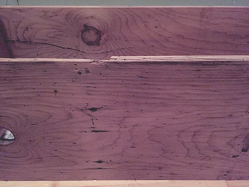
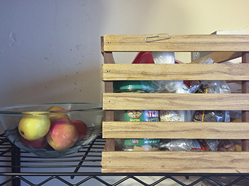
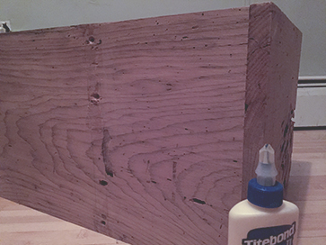
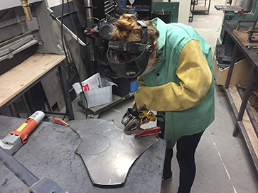
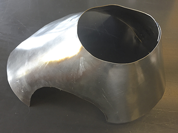
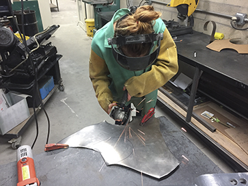

Week 5
To-do:
Make something big
Galvanometer systems: based on moving mirror technology, similar to what is used to create laser light shows
Garolite: fiberglass-epoxy laminate – high strength and stable under temperature fluctuations - a cheaper alternative to carbon fiber
encapsulation: OOP concept bringing together data and functions that manipulate said data - led to advancement in data hiding
runout: inaccuracy due to misalignment between a tool and the main axis – will result in a larger hole than the diameter of the drill
LED Light Pipe: optical fiber or a solid transparent plastic rod for transmitting light from an LED mounted mounted on a PCB to the user interface
minimal surface: a surface that locally minimizes its area and has the mean curvature of 0
Seifert surface: a surface whose boundary is a link of a knot - e.g. Mobius strip
isosurface: three-dimensional analog of a countour line - a level set of a continuous function whose whose domain is a 3D space
Marching cubes: computer-graphics algorithm published in 1987 for extracting polygonal mesh from isosurface voxels
Big as a collection of many
I chose to interpert this week's assignment a bit differently – rather than making one big thing, I thought to make a series of smaller things that together amalgamate into a bigger thing.
Wood
In an effort to make home feel more like home, I created two storage units from the wood scaps found at the GSD.
- 
- 
- 
Metal
Working with metal has been something I've always wanted to do – sheet metal in particular has a very alluring craft property. Yet, I never had access to a metal shop until now.
This week's assignment presented me with the perfect opportunity to try something new. I sought to create an abstract form that would serve as a scuptural light fixture. The aesthetics of a capped pyramid were paired with openings from which light would be able to escape.While I was content with my design in rhino, the final product was disappointing.
- 
- 
- 
On the brighter side, I got to use a grinder and nibbler; rolling and hammering metal into shape was a very satisfying, empowering, and addicting aspect of the task.